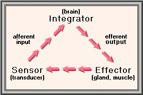

- For metabolic homeostasis, the frequency and amplitude of breathing must respond to metabolic changes.
- Sensors: Chemoreceptors for chemical changes, mechanoreceptors for mechanical changes.
- Integrator: Brain
- Continuous display of voluntary and involuntary actions.
- Voluntary action is done by cerebrum, hypothalamus, limbic system (anger).
- Involuntary action is done by the brain stem respiratory centers (medulla oblongata and pons).
- Brain stem respiratory centers
- Rhythmicity center (medulla)
- Apneustic center (pons)
- Pneumotaxic center (pons)
- Effectors: Respiratory muscles.
